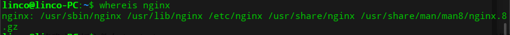

<!DOCTYPE html>
<html lang class="loading">
<head><meta name="generator" content="Hexo 3.8.0">
    <meta charset="UTF-8">
    <meta http-equiv="X-UA-Compatible" content="IE=edge,chrome=1">
    <meta name="viewport" content="width=device-width, minimum-scale=1.0, maximum-scale=1.0, user-scalable=no">
    <title>组件部署集成-三-Nginx服务器 2 - Linco</title>
    <meta name="apple-mobile-web-app-capable" content="yes">
    <meta name="apple-mobile-web-app-status-bar-style" content="black-translucent">
    <meta name="google" content="notranslate">
    <meta name="keywords" content="Linco, Blog,"> 
    <meta name="description" content="本篇文章讨论nginx的配置, 看安装的话看这里 传送门
​    
第二部分 nginx 的基础配置首先, 找到nginx的配置文件, 目标是nginx.conf
windows和Linux直接运,"> 
    <meta name="author" content="Linco"> 
    <link rel="alternative" href="atom.xml" title="Linco" type="application/atom+xml"> 
    <link rel="icon" href="/img/icon.png"> 
    <link rel="stylesheet" href="//cdn.jsdelivr.net/npm/gitalk@1/dist/gitalk.css">
    <link rel="stylesheet" href="/css/diaspora.css">

</head>
</html>
<body class="loading">
    <span id="config-title" style="display:none">Linco</span>
    <div id="loader"></div>
    <div id="single">
    <div id="top" style="display: block;">
    <div class="bar" style="width: 0;"></div>
    <a class="icon-home image-icon" href="javascript:;" data-url></a>
    <div title="播放/暂停" class="icon-play"></div>
    <h3 class="subtitle">组件部署集成-三-Nginx服务器 2</h3>
    <div class="social">
        <!--<div class="like-icon">-->
            <!--<a href="javascript:;" class="likeThis active"><span class="icon-like"></span><span class="count">76</span></a>-->
        <!--</div>-->
        <div>
            <div class="share">
                <a title="获取二维码" class="icon-scan" href="javascript:;"></a>
            </div>
            <div id="qr"></div>
        </div>
    </div>
    <div class="scrollbar"></div>
</div>

    <div class="section">
        <div class="article">
    <div class="main">
        <h1 class="title">组件部署集成-三-Nginx服务器 2</h1>
        <div class="stuff">
            <span>五月 19, 2019</span>
            
  <ul class="post-tags-list"><li class="post-tags-list-item"><a class="post-tags-list-link" href="/tags/java/">java</a></li><li class="post-tags-list-item"><a class="post-tags-list-link" href="/tags/nginx/">nginx</a></li><li class="post-tags-list-item"><a class="post-tags-list-link" href="/tags/基础应用/">基础应用</a></li></ul>


        </div>
        <div class="content markdown">
            <p>本篇文章讨论nginx的配置, 看安装的话看这里 <a href="https://lincoxiaoq.github.io/2019/05/18/%E4%BB%8E%E9%9B%B6%E5%BC%80%E5%A7%8B%E6%90%AD%E5%BB%BA%E9%AB%98%E5%8F%AF%E7%94%A8%E7%9A%84java%E5%88%86%E5%B8%83%E5%BC%8F%E7%B3%BB%E7%BB%9F%E6%9E%B6%E6%9E%84-%E4%BA%8C-%E6%89%8B%E6%8A%8A%E6%89%8B%E6%90%AD%E5%BB%BAnginx%E6%9C%8D%E5%8A%A1%E5%99%A8/" target="_blank" rel="noopener">传送门</a></p>
<p>​    </p>
<h4 id="第二部分-nginx-的基础配置"><a href="#第二部分-nginx-的基础配置" class="headerlink" title="第二部分 nginx 的基础配置"></a>第二部分 nginx 的基础配置</h4><p>首先, 找到nginx的配置文件, 目标是nginx.conf</p>
<p>windows和Linux直接运行版本自然不用说, 配置文件就在安装路径.</p>
<p>对于包管理器或make install 安装的 nginx, 我们通过</p>
<figure class="highlight plain"><table><tr><td class="gutter"><pre><span class="line">1</span><br></pre></td><td class="code"><pre><span class="line">whereis nginx</span><br></pre></td></tr></table></figure>
<p>看到可能存在的几个目标文件夹</p>
<p></p>
<p>目标文件在 /etc/nginx</p>
<p>​    </p>
<p>默认的配置文件如下</p>
<figure class="highlight plain"><table><tr><td class="gutter"><pre><span class="line">1</span><br><span class="line">2</span><br><span class="line">3</span><br><span class="line">4</span><br><span class="line">5</span><br><span class="line">6</span><br><span class="line">7</span><br><span class="line">8</span><br><span class="line">9</span><br><span class="line">10</span><br><span class="line">11</span><br><span class="line">12</span><br><span class="line">13</span><br><span class="line">14</span><br><span class="line">15</span><br><span class="line">16</span><br><span class="line">17</span><br><span class="line">18</span><br><span class="line">19</span><br><span class="line">20</span><br><span class="line">21</span><br><span class="line">22</span><br><span class="line">23</span><br><span class="line">24</span><br><span class="line">25</span><br><span class="line">26</span><br><span class="line">27</span><br><span class="line">28</span><br><span class="line">29</span><br><span class="line">30</span><br><span class="line">31</span><br><span class="line">32</span><br><span class="line">33</span><br><span class="line">34</span><br><span class="line">35</span><br><span class="line">36</span><br><span class="line">37</span><br><span class="line">38</span><br><span class="line">39</span><br><span class="line">40</span><br><span class="line">41</span><br><span class="line">42</span><br><span class="line">43</span><br><span class="line">44</span><br><span class="line">45</span><br><span class="line">46</span><br><span class="line">47</span><br><span class="line">48</span><br><span class="line">49</span><br><span class="line">50</span><br><span class="line">51</span><br><span class="line">52</span><br><span class="line">53</span><br><span class="line">54</span><br><span class="line">55</span><br><span class="line">56</span><br><span class="line">57</span><br><span class="line">58</span><br><span class="line">59</span><br><span class="line">60</span><br><span class="line">61</span><br><span class="line">62</span><br><span class="line">63</span><br><span class="line">64</span><br><span class="line">65</span><br><span class="line">66</span><br><span class="line">67</span><br><span class="line">68</span><br><span class="line">69</span><br><span class="line">70</span><br><span class="line">71</span><br><span class="line">72</span><br><span class="line">73</span><br><span class="line">74</span><br><span class="line">75</span><br><span class="line">76</span><br><span class="line">77</span><br><span class="line">78</span><br><span class="line">79</span><br><span class="line">80</span><br><span class="line">81</span><br><span class="line">82</span><br><span class="line">83</span><br><span class="line">84</span><br><span class="line">85</span><br></pre></td><td class="code"><pre><span class="line">user www-data;</span><br><span class="line">worker_processes auto;</span><br><span class="line">pid /run/nginx.pid;</span><br><span class="line">include /etc/nginx/modules-enabled/*.conf;</span><br><span class="line"></span><br><span class="line">events &#123;</span><br><span class="line">	worker_connections 768;</span><br><span class="line">	# multi_accept on;</span><br><span class="line">&#125;</span><br><span class="line"></span><br><span class="line">http &#123;</span><br><span class="line"></span><br><span class="line">	##</span><br><span class="line">	# Basic Settings</span><br><span class="line">	##</span><br><span class="line"></span><br><span class="line">	sendfile on;</span><br><span class="line">	tcp_nopush on;</span><br><span class="line">	tcp_nodelay on;</span><br><span class="line">	keepalive_timeout 65;</span><br><span class="line">	types_hash_max_size 2048;</span><br><span class="line">	# server_tokens off;</span><br><span class="line"></span><br><span class="line">	# server_names_hash_bucket_size 64;</span><br><span class="line">	# server_name_in_redirect off;</span><br><span class="line"></span><br><span class="line">	include /etc/nginx/mime.types;</span><br><span class="line">	default_type application/octet-stream;</span><br><span class="line"></span><br><span class="line">	##</span><br><span class="line">	# SSL Settings</span><br><span class="line">	##</span><br><span class="line"></span><br><span class="line">	ssl_protocols TLSv1 TLSv1.1 TLSv1.2; # Dropping SSLv3, ref: POODLE</span><br><span class="line">	ssl_prefer_server_ciphers on;</span><br><span class="line"></span><br><span class="line">	##</span><br><span class="line">	# Logging Settings</span><br><span class="line">	##</span><br><span class="line"></span><br><span class="line">	access_log /var/log/nginx/access.log;</span><br><span class="line">	error_log /var/log/nginx/error.log;</span><br><span class="line"></span><br><span class="line">	##</span><br><span class="line">	# Gzip Settings</span><br><span class="line">	##</span><br><span class="line"></span><br><span class="line">	gzip on;</span><br><span class="line"></span><br><span class="line">	# gzip_vary on;</span><br><span class="line">	# gzip_proxied any;</span><br><span class="line">	# gzip_comp_level 6;</span><br><span class="line">	# gzip_buffers 16 8k;</span><br><span class="line">	# gzip_http_version 1.1;</span><br><span class="line">	# gzip_types text/plain text/css application/json application/javascript text/xml application/xml application/xml+rss text/javascript;</span><br><span class="line"></span><br><span class="line">	##</span><br><span class="line">	# Virtual Host Configs</span><br><span class="line">	##</span><br><span class="line"></span><br><span class="line">	include /etc/nginx/conf.d/*.conf;</span><br><span class="line">	include /etc/nginx/sites-enabled/*;</span><br><span class="line">&#125;</span><br><span class="line"></span><br><span class="line"></span><br><span class="line">#mail &#123;</span><br><span class="line">#	# See sample authentication script at:</span><br><span class="line">#	# http://wiki.nginx.org/ImapAuthenticateWithApachePhpScript</span><br><span class="line"># </span><br><span class="line">#	# auth_http localhost/auth.php;</span><br><span class="line">#	# pop3_capabilities &quot;TOP&quot; &quot;USER&quot;;</span><br><span class="line">#	# imap_capabilities &quot;IMAP4rev1&quot; &quot;UIDPLUS&quot;;</span><br><span class="line"># </span><br><span class="line">#	server &#123;</span><br><span class="line">#		listen     localhost:110;</span><br><span class="line">#		protocol   pop3;</span><br><span class="line">#		proxy      on;</span><br><span class="line">#	&#125;</span><br><span class="line"># </span><br><span class="line">#	server &#123;</span><br><span class="line">#		listen     localhost:143;</span><br><span class="line">#		protocol   imap;</span><br><span class="line">#		proxy      on;</span><br><span class="line">#	&#125;</span><br><span class="line">#&#125;</span><br></pre></td></tr></table></figure>
<p>配置文件按头部和大括号分割成四部分</p>
<figure class="highlight plain"><table><tr><td class="gutter"><pre><span class="line">1</span><br><span class="line">2</span><br><span class="line">3</span><br><span class="line">4</span><br></pre></td><td class="code"><pre><span class="line">user www-data;</span><br><span class="line">worker_processes auto;</span><br><span class="line">pid /run/nginx.pid;</span><br><span class="line">include /etc/nginx/modules-enabled/*.conf;</span><br></pre></td></tr></table></figure>
<p>这里是配置文件的头部, 不属于任何一个功能类型, 需要修改的是 worker_processes 和 user, user 可以有一到两个值, 第一个是用户, 第二则是用户组, 如果没有特殊的权限需求的话可以不用改动.</p>
<p>​    </p>
<p>worker_processes 是出理网络请求的经常数量, 修改成适合自己 PC 配置的值, 理论不宜大于 cpu 核心数</p>
<p>​    </p>
<p>nginx 性能消耗很低, 不容易造成系统瓶颈. 小应用2个进程, 中小应用4个进程是足够的</p>
<p>​    </p>
<p>这里可以加多一个error_log参数, 参数值包括日志路径和日志级别, 比如</p>
<figure class="highlight plain"><table><tr><td class="gutter"><pre><span class="line">1</span><br></pre></td><td class="code"><pre><span class="line">error_log log/debug.log debug</span><br></pre></td></tr></table></figure>
<p>所以为什么参数名叫 error_log?</p>
<p>​    </p>
<figure class="highlight plain"><table><tr><td class="gutter"><pre><span class="line">1</span><br></pre></td><td class="code"><pre><span class="line">event&#123;&#125;</span><br></pre></td></tr></table></figure>
<p>event 模块包含网络连接的相关配置, 包括连接数, 事件驱动等</p>
<p>​    </p>
<p>multi_accept 设置一个进程同时接受多个网络连接，默认为off, 建议设置为 on</p>
<p>​    </p>
<p>worker_connections 设置一个进程的连接数, 理论上集群中所有nginx服务的所有进程</p>
<p>​    </p>
<p>worker_connections 加起来应该超过系统设计的并发上限</p>
<p>​    </p>
<p>use 参数选择事件驱动模型, 事件驱动由系统提供支持, 正常的 linux 版本下首推 epull , 否则默认, 不用设置.</p>
<p>​    </p>
<figure class="highlight plain"><table><tr><td class="gutter"><pre><span class="line">1</span><br></pre></td><td class="code"><pre><span class="line">http&#123;&#125;</span><br></pre></td></tr></table></figure>
<p>http 模块是我们nginx的业务功能设置, 怎样提供web服务, web资源在哪, 如何代理等等都是在这里做的配置</p>
<p>​    </p>
<p>和 conf 文件一样, 我们按外层括号把 http 模块分成三份, 配置功能参考注释</p>
<figure class="highlight plain"><table><tr><td class="gutter"><pre><span class="line">1</span><br><span class="line">2</span><br><span class="line">3</span><br><span class="line">4</span><br><span class="line">5</span><br><span class="line">6</span><br><span class="line">7</span><br><span class="line">8</span><br><span class="line">9</span><br><span class="line">10</span><br><span class="line">11</span><br><span class="line">12</span><br><span class="line">13</span><br><span class="line">14</span><br><span class="line">15</span><br><span class="line">16</span><br><span class="line">17</span><br><span class="line">18</span><br><span class="line">19</span><br><span class="line">20</span><br><span class="line">21</span><br><span class="line">22</span><br><span class="line">23</span><br><span class="line">24</span><br><span class="line">25</span><br><span class="line">26</span><br><span class="line">27</span><br><span class="line">28</span><br><span class="line">29</span><br><span class="line">30</span><br><span class="line">31</span><br><span class="line">32</span><br><span class="line">33</span><br><span class="line">34</span><br><span class="line">35</span><br><span class="line">36</span><br><span class="line">37</span><br><span class="line">38</span><br><span class="line">39</span><br><span class="line">40</span><br><span class="line">41</span><br><span class="line">42</span><br><span class="line">43</span><br><span class="line">44</span><br><span class="line">45</span><br><span class="line">46</span><br><span class="line">47</span><br><span class="line">48</span><br><span class="line">49</span><br><span class="line">50</span><br><span class="line">51</span><br><span class="line">52</span><br><span class="line">53</span><br><span class="line">54</span><br><span class="line">55</span><br><span class="line">56</span><br><span class="line">57</span><br><span class="line">58</span><br><span class="line">59</span><br><span class="line">60</span><br><span class="line">61</span><br><span class="line">62</span><br><span class="line">63</span><br><span class="line">64</span><br><span class="line">65</span><br><span class="line">66</span><br><span class="line">67</span><br><span class="line">68</span><br><span class="line">69</span><br><span class="line">70</span><br><span class="line">71</span><br><span class="line">72</span><br><span class="line">73</span><br><span class="line">74</span><br><span class="line">75</span><br><span class="line">76</span><br><span class="line">77</span><br><span class="line">78</span><br><span class="line">79</span><br><span class="line">80</span><br><span class="line">81</span><br><span class="line">82</span><br><span class="line">83</span><br><span class="line">84</span><br><span class="line">85</span><br></pre></td><td class="code"><pre><span class="line">http &#123;</span><br><span class="line"></span><br><span class="line">    # 头部</span><br><span class="line">   </span><br><span class="line">	##</span><br><span class="line">	# Basic Settings</span><br><span class="line">	##</span><br><span class="line"></span><br><span class="line">	sendfile on; # 文件访问, 调试的时候可以打开, 这样输入有效的目录url可以访问目录结构, 上线必须关闭</span><br><span class="line">	tcp_nopush on; # 和下面的配置互斥, 开启这个整合发包提高网络利用率</span><br><span class="line">	tcp_nodelay off; # 和上面的配置互斥, 开启这个实时发包提高时效</span><br><span class="line">	keepalive_timeout 65; # 自动断开时间</span><br><span class="line">	types_hash_max_size 2048; # 支持文件类型上限, 2048够多了, 改小也省不下多少点内存</span><br><span class="line">	# server_tokens off;</span><br><span class="line"></span><br><span class="line">	# server_names_hash_bucket_size 64;</span><br><span class="line">	# server_name_in_redirect off;</span><br><span class="line"></span><br><span class="line">	include /etc/nginx/mime.types; # 引入默认的类型池, 不用改动</span><br><span class="line">	default_type application/octet-stream;</span><br><span class="line"></span><br><span class="line">	##</span><br><span class="line">	# SSL Settings</span><br><span class="line">	##</span><br><span class="line">	# ssl 支持, nginx 中哪里用到ssl目前还不清楚</span><br><span class="line">	ssl_protocols TLSv1 TLSv1.1 TLSv1.2; # Dropping SSLv3, ref: POODLE</span><br><span class="line">	ssl_prefer_server_ciphers on;</span><br><span class="line"></span><br><span class="line">	##</span><br><span class="line">	# Logging Settings</span><br><span class="line">	##</span><br><span class="line">	# 日志配置可以控制格式, 先定义自己的参数</span><br><span class="line">	#  log_format custumerFormat &apos;$remote_addr–$remote_user [$time_local] $request $status $body_bytes_sent $http_referer $http_user_agent $http_x_forwarded_for&apos;;</span><br><span class="line">	# 在这里使用</span><br><span class="line">	access_log log/access.log custumerFormat;</span><br><span class="line">	error_log log/error.log; # 不用格式化参数也能配置</span><br><span class="line"></span><br><span class="line">	##</span><br><span class="line">	# Gzip Settings</span><br><span class="line">	##</span><br><span class="line">	# 开启后可以大幅减少传送数据量, 会稍微提高计算成本, 无特殊情况开就完事</span><br><span class="line">	gzip on;</span><br><span class="line">	# gzip_vary on;</span><br><span class="line">	# gzip_proxied any;</span><br><span class="line">	# gzip_comp_level 6;</span><br><span class="line">	# gzip_buffers 16 8k;</span><br><span class="line">	# gzip_http_version 1.1;</span><br><span class="line">	# gzip_types text/plain text/css application/json application/javascript text/xml application/xml application/xml+rss text/javascript;</span><br><span class="line"></span><br><span class="line">	##</span><br><span class="line">	# Virtual Host Configs</span><br><span class="line">	##</span><br><span class="line"></span><br><span class="line">	include /etc/nginx/conf.d/*.conf;</span><br><span class="line">	include /etc/nginx/sites-enabled/*;</span><br><span class="line">	</span><br><span class="line">	##</span><br><span class="line">	# Error Redirect</span><br><span class="line">	##</span><br><span class="line">	error_page 404 /404.html # 错误页面, 支持多种错误码, 拥有比目标web服务更高的优先级</span><br><span class="line">	</span><br><span class="line">	</span><br><span class="line">	# 第二部分</span><br><span class="line">	upstream (集群名) &#123;   </span><br><span class="line">      server (ip): (com);</span><br><span class="line">      server (ip2):(com2);</span><br><span class="line">    &#125;</span><br><span class="line">    # 反向代理的服务器列表, 可以有多个不同名称的 upstream 处理不同功能, 同一upstream里面的服务内容是一致的. 这是一个选项比较多的模块,等下分析</span><br><span class="line">    </span><br><span class="line">    # 第三部分</span><br><span class="line">    # 定义一个监听服务</span><br><span class="line">    server &#123;</span><br><span class="line">        keepalive_requests 120; #单连接请求上限次数。</span><br><span class="line">        listen  8080;   #监听端口</span><br><span class="line">        server_name  127.0.0.1;   #监听地址</span><br><span class="line">        # location 是这个服务所适用的请求处理规则, 可以配置多个</span><br><span class="line">        location /&lt;url_prefix&gt; &#123;       # /&lt;prefix&gt;和下属url由这个处理</span><br><span class="line">           proxy_pass  http://&lt;url或upstream名&gt;  #请求转向, 这个最重要</span><br><span class="line">           # deny (ip);  #拒绝的ip</span><br><span class="line">           # allow (ip); #允许的ip           </span><br><span class="line">        &#125; </span><br><span class="line">        location /&#123; # 默认处理方法</span><br><span class="line">        &#125;</span><br><span class="line">    &#125;</span><br><span class="line">&#125;</span><br></pre></td></tr></table></figure>
<p>​    </p>
<p>一个upstream 如果配置了多个服务地址, 可以有多种负载均衡方案供选择</p>
<ol>
<li><p>权重分配</p>
<p>在每个服务地址后面增加weight=?参数, nginx会按权重的大小随机分配请求, 最终各服务处理的请求数占比趋向和权重一致</p>
</li>
</ol>
<ol start="2">
<li><p>响应速度分配</p>
<p>在服务地址列表后面加一行单词 fair, 系统会按照响应请求的速度来智能分配web请求到服务列表, 个人认为这是比较高效的方案</p>
</li>
</ol>
<ol start="3">
<li><p>ip_hash/url_hash</p>
<p>在服务地址列表后面加一行单词 ip_hash或url_hash, ip_hash是接近平均分配的方案, 但有一个额外的特点, 由于同一ip总能得到相同的hash值, 最后给到同一台服务器, 所有分布式环境下session共享的问题也有了简单解决方案, 至于url_hash, 实在看不出比起其他负载均衡方案有什么实际用途…</p>
</li>
</ol>
<p>除此以外, upstream还可以为每个设备设置状态值，这些状态值的含义分别如下：</p>
<figure class="highlight plain"><table><tr><td class="gutter"><pre><span class="line">1</span><br><span class="line">2</span><br><span class="line">3</span><br><span class="line">4</span><br><span class="line">5</span><br><span class="line">6</span><br><span class="line">7</span><br><span class="line">8</span><br><span class="line">9</span><br><span class="line">10</span><br><span class="line">11</span><br><span class="line">12</span><br></pre></td><td class="code"><pre><span class="line">down 表示单前的server暂时不参与负载.</span><br><span class="line">weight 默认为1.weight越大，负载的权重就越大。</span><br><span class="line">max_fails ：允许请求失败的次数默认为1.当超过最大次数时，返回proxy_next_upstream 模块定义的错误.</span><br><span class="line">fail_timeout : max_fails次失败后，暂停的时间。</span><br><span class="line">backup： 其它所有的非backup机器down或者忙的时候，请求backup机器。所以这台机器压力会最轻。</span><br><span class="line">upstream bakend&#123; #定义负载均衡设备的Ip及设备状态 </span><br><span class="line">      ip_hash; </span><br><span class="line">      server 10.0.0.11:9090 down; </span><br><span class="line">      server 10.0.0.11:8080 weight=2; </span><br><span class="line">      server 10.0.0.11:6060; </span><br><span class="line">      server 10.0.0.11:7070 backup; </span><br><span class="line">&#125;</span><br></pre></td></tr></table></figure>
<p>​    </p>
<p>server 支持更多业务细节相关的配置项, 需要的话到官网查看</p>
<p>​    </p>
<figure class="highlight plain"><table><tr><td class="gutter"><pre><span class="line">1</span><br></pre></td><td class="code"><pre><span class="line">email&#123;&#125;</span><br></pre></td></tr></table></figure>
<p>email 模块配置邮件服务相关, 这里不作讨论</p>
<p>​    </p>
<p>nginx默认配置会监听localhost域名, 对于同个监听端口, nginx可以根据域名的不同分发到不同的转发配置, 比如有下列配置</p>
<figure class="highlight plain"><table><tr><td class="gutter"><pre><span class="line">1</span><br><span class="line">2</span><br><span class="line">3</span><br><span class="line">4</span><br><span class="line">5</span><br><span class="line">6</span><br></pre></td><td class="code"><pre><span class="line">server &#123;</span><br><span class="line">  listen 80;</span><br><span class="line">  listen [::]:80;</span><br><span class="line">  server_name localhost;</span><br><span class="line">  root /var/www/html/home;</span><br><span class="line">&#125;</span><br></pre></td></tr></table></figure>
<figure class="highlight plain"><table><tr><td class="gutter"><pre><span class="line">1</span><br><span class="line">2</span><br><span class="line">3</span><br><span class="line">4</span><br><span class="line">5</span><br><span class="line">6</span><br></pre></td><td class="code"><pre><span class="line">server &#123;</span><br><span class="line">  listen 80;</span><br><span class="line">  listen [::]:80;</span><br><span class="line">  server_name myhost;</span><br><span class="line">  root /var/www/html/home;</span><br><span class="line">&#125;</span><br></pre></td></tr></table></figure>
<p>最终访问myhost链接的请求会由第二个server配置处理, 访问其他地址, 最终到达此服务器的请求由第一个server处理</p>
<p>​    </p>
<p>为了划分不同域名的配置信息, 多数企业应用部署时会在conf.d路径或site-avariable路径写域名配置信息</p>
<p>此外值得一提的是, nginx 可以在启动命令加载特定的conf文件, 默认的配置会失效. </p>
<figure class="highlight plain"><table><tr><td class="gutter"><pre><span class="line">1</span><br></pre></td><td class="code"><pre><span class="line">nginx -c (文件地址)</span><br></pre></td></tr></table></figure>
<p>​    </p>
<p>nginx 程序可以同时按不同项目配置需要运行多个nginx服务, 还可以将 nginx.conf 随代码加入版本管理中, 对于不同的使用环境提供不同的conf文件, 这样多机器、多环境和协同开发就不需要反复配置调整了</p>

            <!--[if lt IE 9]><script>document.createElement('audio');</script><![endif]-->
            <audio id="audio" loop="1" preload="auto" controls="controls" data-autoplay="true">
                <source type="audio/mpeg" src="/music/default_bgm.mp3">
            </audio>
            
        </div>
        
    <div id="gitalk-container" class="comment link" data-ae="false" data-ci="978518cc439cd352dd0b" data-cs="2d89825e7db6df72d065714d6b4ac1ce1829b14e" data-r="LincoXiaoQ.github.io" data-o="LincoXiaoQ" data-a="LincoXiaoQ" data-d="false">查看评论</div>


    </div>
    
</div>


    </div>
</div>
</body>
<script src="//cdn.jsdelivr.net/npm/gitalk@1/dist/gitalk.min.js"></script>
<script src="//lib.baomitu.com/jquery/1.8.3/jquery.min.js"></script>
<script src="/js/plugin.js"></script>
<script src="/js/diaspora.js"></script>
<link rel="stylesheet" href="/photoswipe/photoswipe.css">
<link rel="stylesheet" href="/photoswipe/default-skin/default-skin.css">
<script src="/photoswipe/photoswipe.min.js"></script>
<script src="/photoswipe/photoswipe-ui-default.min.js"></script>

<!-- Root element of PhotoSwipe. Must have class pswp. -->
<div class="pswp" tabindex="-1" role="dialog" aria-hidden="true">
    <!-- Background of PhotoSwipe. 
         It's a separate element as animating opacity is faster than rgba(). -->
    <div class="pswp__bg"></div>
    <!-- Slides wrapper with overflow:hidden. -->
    <div class="pswp__scroll-wrap">
        <!-- Container that holds slides. 
            PhotoSwipe keeps only 3 of them in the DOM to save memory.
            Don't modify these 3 pswp__item elements, data is added later on. -->
        <div class="pswp__container">
            <div class="pswp__item"></div>
            <div class="pswp__item"></div>
            <div class="pswp__item"></div>
        </div>
        <!-- Default (PhotoSwipeUI_Default) interface on top of sliding area. Can be changed. -->
        <div class="pswp__ui pswp__ui--hidden">
            <div class="pswp__top-bar">
                <!--  Controls are self-explanatory. Order can be changed. -->
                <div class="pswp__counter"></div>
                <button class="pswp__button pswp__button--close" title="Close (Esc)"></button>
                <button class="pswp__button pswp__button--share" title="Share"></button>
                <button class="pswp__button pswp__button--fs" title="Toggle fullscreen"></button>
                <button class="pswp__button pswp__button--zoom" title="Zoom in/out"></button>
                <!-- Preloader demo http://codepen.io/dimsemenov/pen/yyBWoR -->
                <!-- element will get class pswp__preloader--active when preloader is running -->
                <div class="pswp__preloader">
                    <div class="pswp__preloader__icn">
                      <div class="pswp__preloader__cut">
                        <div class="pswp__preloader__donut"></div>
                      </div>
                    </div>
                </div>
            </div>
            <div class="pswp__share-modal pswp__share-modal--hidden pswp__single-tap">
                <div class="pswp__share-tooltip"></div> 
            </div>
            <button class="pswp__button pswp__button--arrow--left" title="Previous (arrow left)">
            </button>
            <button class="pswp__button pswp__button--arrow--right" title="Next (arrow right)">
            </button>
            <div class="pswp__caption">
                <div class="pswp__caption__center"></div>
            </div>
        </div>
    </div>
</div>


</html>
